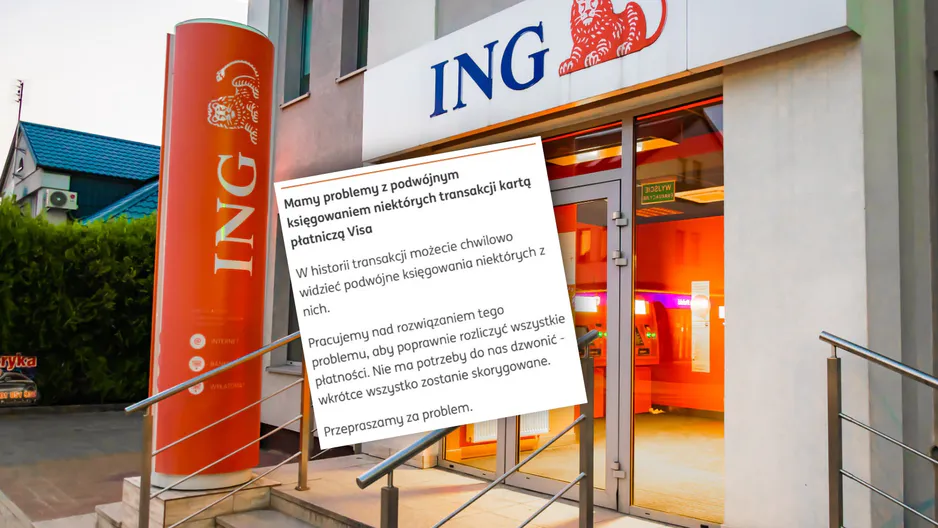
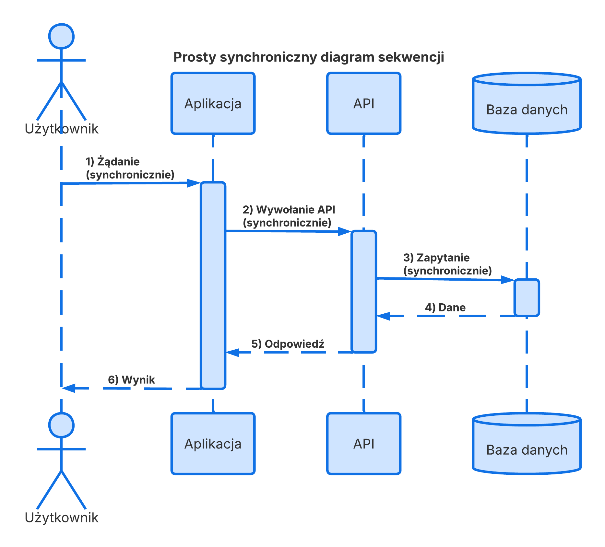
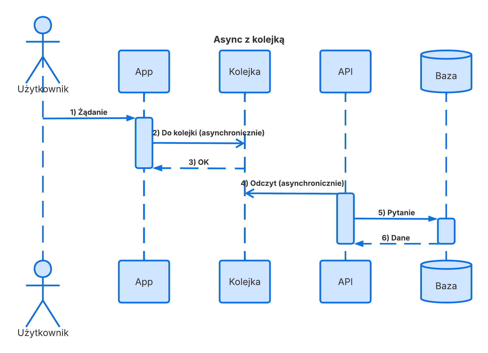
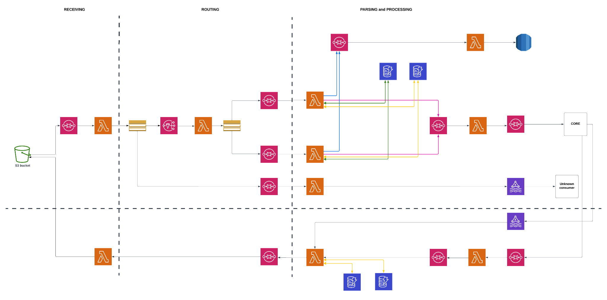

Event-driven architecture w FinTechu
Łukasz Binkiewicz

O mnie
- Banki, fintechy, startupy
- Fullstack, Architektura oprogramowania
- Po godzinach jazda na szosie i wiele różnych sportów
Czym jest w ogóle to EDA?
Komunikacja Synchroniczna
Nadawca czeka na odpowiedź

Komunikacja Asynchroniczna
Nadawca nie czeka — zdarzenie żyje własnym życiem

Trzy kluczowe pojęcia
Niezmienny fakt
- Coś się stało
- Nie można tego zmienić
- Reprezentuje przeszłość
Infrastruktura dostarczająca eventy
- Przechowuje i dostarcza eventy
- Może zapewniać gwarancje dostarczenia
- Może transformować eventy
Serwis reagujący
- Subskrybuje eventy
- Reaguje na nie
- Może publikować kolejne eventy
Dlaczego Event-Driven?
Loose coupling
Serwisy nie znają się nawzajem. Dodajesz nowego konsumenta — zero zmian w producencie.
Resilience
Serwis padł? Eventy czekają w kolejce
Skalowalność
Każdy konsument skaluje się niezależnie. Wąskie gardło jednego nie blokuje reszty.
Temporal decoupling
Producent i konsument nie muszą działać równocześnie
Audit trail
Strumień eventów = pełna historia
Dlaczego EDA w finansach to inna liga?
| E-commerce | FinTech | |
|---|---|---|
| Zgubione zdarzenie | Produkt nie wyświetlony | Brakująca płatność |
| Duplikat | Podwójny e-mail | Podwójne obciążenie |
| Zła kolejność | Dziwny interfejs | Naruszenie compliance |
| Opóźnienie | Wolna strona | Przegapione okno rozliczeniowe |
W e-commerce zgubiony event to niedogodność.
W fintechu to czyjeś pieniądze i potencjalne problemy.
Czym jest BACS?
Brytyjski system rozliczeń międzybankowych — działa od 1968 roku.
Direct Credit — pensje, wypłaty, zwroty
Direct Debit — rachunki, subskrypcje
BACS — 3-dniowy cykl
Input Day
Processing Day
Settlement Day
Standard 18 — format pliku BACS
100 znaków na linię
VOL1BACSTELIP 000001
HDR1A083608 PAYMENTS 01 01 00001 26011500000000
2 083608 12345678 99 161302 87654321 00000012500 JAN KOWALSKI PENSJA 01
2 083608 98765432 99 161302 87654321 00000005000 ANNA NOWAK ZWROT
2 083608 11223344 01 161302 87654321 00000002399 NETFLIX PL SUB-2025
EOF1A083608 PAYMENTS 01 000003 00000019899
EOV1 000001Architektura: BACS na AWS

BACS — event flow jednego przelewu
7 eventów · 4 dni · 2 dni robocze przetwarzania
RBS / NatWest — 2012
Przyczyna: single point of failure w systemie batchowym. Brak możliwości wycofania po aktualizacji.
Zero circuit breaker.
To się naprawdę zdarza
Migracja danych między systemami — 5 dni outage. 1.9 mld GBP strat.
1.9 mln klientów bez dostępu. Płatności gubione, duplikowane. CEO zrezygnował.
Awaria centrum przetwarzania — 10h outage. ~5 mln transakcji odrzuconych.
Pojedynczy punkt awarii w architekturze eventowej. Brak failover.
Bug w systemie płatności — środki pobierane bez zgody użytkowników.
Race condition przy przetwarzaniu eventów. Idempotency nie była egzekwowana.
Duplikaty — przelew dwa razy w BACS batchu
Faza 1 — zbieranie przelewów
- Lambda w Fazie 1 przetwarza przelew na 5 000 zł (walidacja, AML)
- Zapisuje do S3/DynamoDB jako AWAITING_BATCH
- Zapis OK, ale Lambda robi timeout zanim usunie event z SQS
- SQS dostarcza event ponownie → przelew ląduje w bazie dwa razy
- Faza 2 generuje batch z duplikatem → BACS obciąża konto 2×
Wynik: 10 000 zł zamiast 5 000 zł
Rozwiązanie: Idempotency
async function processPayment(event) {
const key = event.idempotencyKey;
try {
await dynamodb.put({
Item: { key, status: 'PROCESSING', ttl: now()+24h },
ConditionExpression: 'attribute_not_exists(key)'
});
} catch (e) {
if (ConditionalCheckFailed) return existing.result;
}
const result = await executeBankingPayment(event);
await dynamodb.update({ key, status:'COMPLETED', result });
return result;
}
Duplikat? Zwróć zapisany wynik. Zero ponownego przetwarzania.
Outbox Pattern — atomowe publikowanie eventów
❌ Bez Outbox
System nie wie co się stało.
✓ Outbox Pattern
→ publikuje do SQS
→ marks
published = true
Dead Letter Queue — przelew nie trafił do batcha
Faza 1→2 — event ginie zanim trafi do pliku
Poison message
Sort code w złym formacie — walidacja pada
Transient failure
AML check niedostępny — przelew nie przechodzi Fazy 1
Business logic
Konto zamknięte między init a batch — brak obsługi
Timeout cascade
Lambda → Step Functions → API — cały łańcuch timeout
Obsługa DLQ
- Alerty z kontekstem — ile, jak długo czeka, jakie typy
- Kategoryzacja po severity — 50 zł ≠ 500 000 zł
- Controlled replay — batch po 10, z throttlingiem
- DLQ dashboard — nie każ on-call klikać po konsoli o 3 w nocy
- Post-mortem na każdy incident
Kolejność eventów — trzy podejścia
SQS FIFO
Gwarantuje kolejność
Wyższy koszt
Trudniejszy setup
Out-of-order
+ rekoncyliacja
Wysoki throughput
Bałagan w logice
Saga pattern
(orchestration)
Pełna kontrola
Korekta na każdym kroku
Najdroższe w implementacji
Obserwowalność — gdzie jest mój przelew?
Przelew gdzieś między Fazą 1 a Fazą 3.
W której? Jak znaleźć wśród 500 innych tranzakcji?
Correlation ID
Jeden UUID w każdym logu, evencie, external call.
Structured Logging
correlationId, paymentId, service, action, duration.
Distributed Tracing
X-Ray / OpenTelemetry.
Wizualizacja wąskich gardeł.
Metryki biznesowe
Ile in-flight?
Jaki p95?
Ile na DLQ?
SLA hit rate?
Legacy banking — adapter pattern
Internal Domain
Payment {
amount,
currency,
recipient
}
Banking Networks
Batch files (days)
API calls (seconds)
MT messages (hours)
Anti-corruption layer
Twój core domain nie wie co to MT103 czy Standard 18.
Wie tylko: SENT → ACKNOWLEDGED → SETTLED.
SWIFT migruje z MT na MX? Zmieniasz adapter — reszta systemu nie wie.
Jak to działa na produkcji?

Co zabrać do domu?
Event-driven architecture
w fintechu to nie architektura.
To system odpowiedzialności.
Każdy event to czyjś przelew,
czyjeś pieniądze, czyjaś pensja.
Projektujcie tak, jakby to były Wasze.
github.com/himeno61 · linkedin.com/in/lukasz-binkiewicz